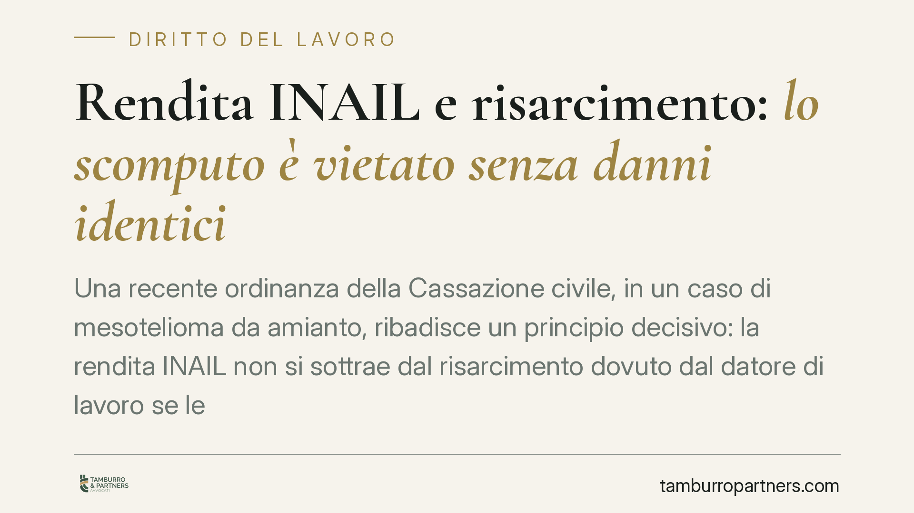

Rendita INAIL e risarcimento: lo scomputo è vietato senza danni identici
Una recente ordinanza della Cassazione civile, in un caso di mesotelioma da amianto, ribadisce un principio decisivo: la rendita INAIL non si sottrae dal risarcimento dovuto dal datore di lavoro se le due somme non ristorano lo stesso identico pregiudizio. Per il lavoratore danneggiato e per gli eredi cambia il metodo di calcolo del cosiddetto danno differenziale.

Il caso
La vicenda nasce dalla morte di un lavoratore per mesotelioma, patologia correlata all'esposizione ad amianto presso l'Arsenale della Marina Militare di Taranto. Gli eredi hanno agito contro il Ministero della Difesa per il risarcimento integrale dei danni; sul piano assicurativo l'INAIL aveva già erogato le proprie prestazioni.
Il nodo è classico: di quanto l'indennizzo pubblico riduce il risarcimento civile? La Cassazione ha confermato che la detrazione opera solo tra poste di danno omogenee, cioè che coprono esattamente lo stesso pregiudizio. Dove manca questa identità, lo scomputo è vietato.
*Nota: gli estremi numerici dell'ordinanza vanno verificati sul testo ufficiale prima di ogni utilizzo in sede difensiva.*
Inquadramento normativo
Il sistema poggia su tre pilastri.
L'art. 10 del DPR 1124/1965 prevede l'esonero del datore di lavoro dalla responsabilità civile nei limiti di quanto coperto dall'assicurazione obbligatoria. Da qui nasce la nozione di danno differenziale: la quota di risarcimento che eccede l'indennizzo INAIL e che resta a carico del datore quando ne ricorre la responsabilità.
L'art. 13 del D.Lgs. 38/2000 ha introdotto l'indennizzo INAIL del danno biologico, cioè della lesione all'integrità psicofisica. Questo è il punto tecnico delicato: la rendita INAIL copre il danno biologico e, in parte, le conseguenze patrimoniali da riduzione della capacità lavorativa, ma non copre il danno morale né il danno non patrimoniale che non rientra nei parametri tabellari dell'istituto.
Sul metodo del calcolo soccorrono le Sezioni Unite del 22 maggio 2018 (nn. 12564, 12565, 12566 e 12567). Per il rapporto tra prestazioni INAIL e risarcimento del danno differenziale rileva in particolare la n. 12566/2018: la detrazione è ammessa, ma va condotta per poste omogenee, confrontando ciò che l'INAIL ha effettivamente ristorato con la corrispondente voce di danno civile.
Implicazioni pratiche
Il principio di omogeneità impone di scomporre il risarcimento voce per voce, anziché operare una sottrazione "a saldo" tra due importi complessivi.
- Danno biologico: è l'unica voce su cui la rendita INAIL può incidere, e solo nella misura in cui l'istituto l'abbia effettivamente indennizzato.
- Danno morale: non è coperto dall'indennizzo INAIL, che ristora il pregiudizio biologico-patrimoniale. Non è quindi scomputabile.
- Danno patrimoniale da perdita o riduzione della capacità di guadagno: la detrazione opera solo per la parte corrispondente alla componente patrimoniale della rendita.
- Danno iure proprio degli eredi: il pregiudizio che i familiari subiscono in proprio per la perdita del congiunto è autonomo e distinto; non può essere eroso dalle prestazioni spettanti al lavoratore.
La conseguenza concreta è che uno scomputo indiscriminato riduce illegittimamente il risarcimento. Il differenziale va ricostruito con precisione, posta per posta.
Cosa fare in concreto
- Acquisire la documentazione INAIL completa: tipo di prestazione erogata, importo e, soprattutto, quale voce di danno l'istituto ha indennizzato (biologico, patrimoniale, in che quota).
- Scomporre il risarcimento civile per singole poste: biologico, morale, patrimoniale e, per i familiari, danno iure proprio. È opportuno ricostruirle separatamente e documentarle.
- Verificare l'omogeneità voce per voce: confrontare ciascuna posta civile solo con la corrispondente prestazione INAIL, escludendo lo scomputo dove l'identità del pregiudizio manca.
- Contestare lo scomputo "a saldo": qualsiasi detrazione calcolata sull'importo complessivo, senza analisi per poste, è da censurare alla luce del principio di omogeneità.
- Agire nei termini di prescrizione: nelle patologie a lunga latenza come il mesotelioma il termine decorre dalla manifestazione e conoscibilità della malattia; è prudente verificarlo tempestivamente.
Per i lavoratori esposti e per gli eredi, il messaggio è chiaro: l'indennizzo pubblico non assorbe l'intero risarcimento. Il differenziale esiste e va fatto valere con un calcolo rigoroso.
---
Contributo informativo a cura di Tamburro & Partners Avvocati. Non costituisce parere legale.
Ogni storia di lavoro ha i suoi tempi.
Se gestisci HR e vuoi un confronto su contenzioso, ispezioni o licenziamenti, scrivi allo studio. Ti rispondiamo entro un giorno lavorativo.